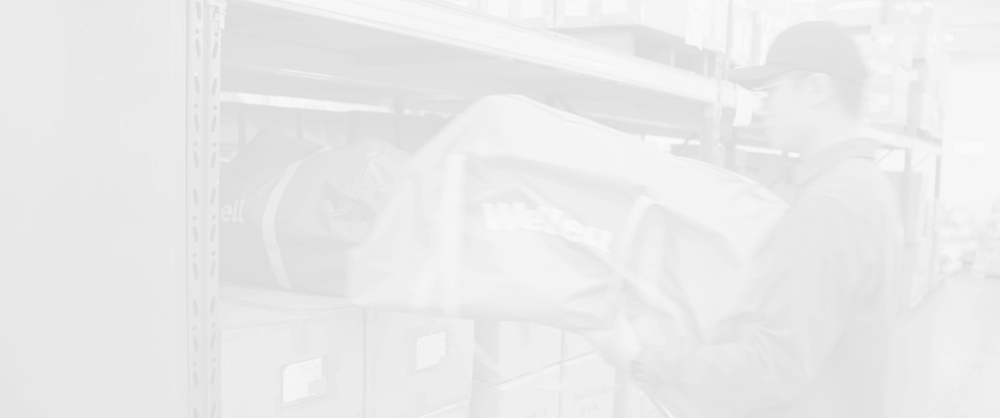
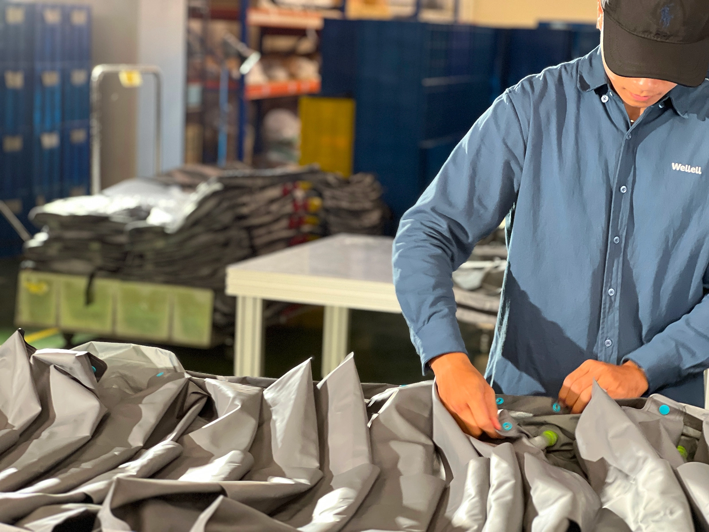


This project is under an NDA, so certain user research findings and the final design cannot be disclosed in detail publicly.
KeepWell is a SaaS platform that streamlines decontamination and rental management for medical equipment, with an initial focus on medical air mattresses. By pairing barcode asset tags with each device, it helps European rental service providers manage the full workflow, including on-site inventory, disinfection, orders, logistics, and customer management.
In this portfolio, I will focus on workflow “4. Cleaning & packing”. Detailed research findings and final interface designs are represented by placeholders because of the NDA.
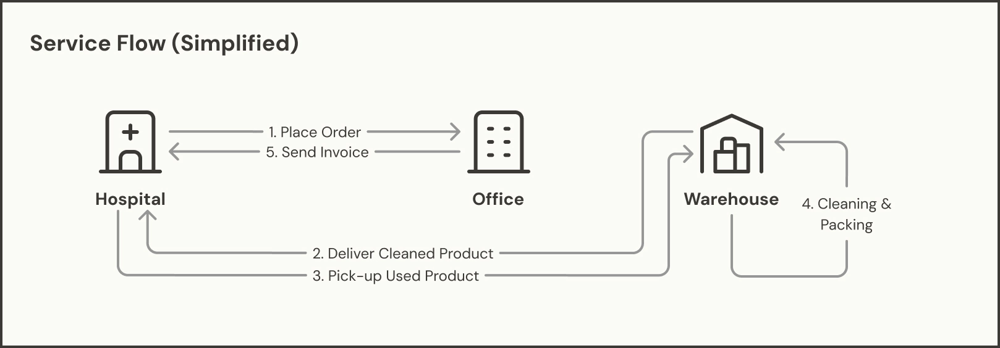

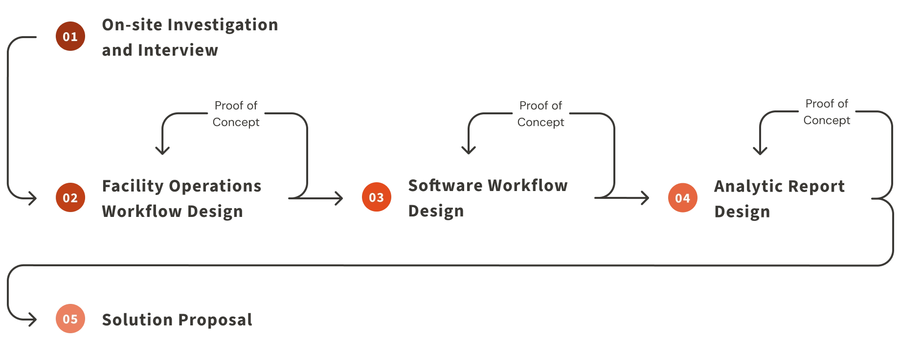
Paper-based workflows and manual checks led to incomplete records.
Rental quantities and dates were recorded on paper. Even with multiple manual checks, service providers could not accurately track whether each product was in the hospital, returned, or lost. Human counting errors further widened the gap between estimated and actual revenue.
Limited visibility into operational efficiency and product status.
Product processing status inside the facility was unclear. Managers could not easily assess station efficiency, inventory availability, workflow bottlenecks, or future product demand.

Beyond software subscriptions, KeepWell also serves as a foundation for future IoT integration with hardware products.

The current system includes too many features, does not match the client’s need for simplification, and lacks RFID support for bulk product registration.

Recording product status at each workstation adds extra work. The challenge was to make status updates fast while keeping the workflow efficient and uninterrupted.
Reducing operational effort is a key concern for service providers as labor costs are high. Before starting the software design process, we observed and documented factory workers’ daily workflows and mapped them into a user journey to help identify opportunities for improving the existing software experience. We focused on getting the following information:
…in order to find out the minimum mandatory needs when adapting the software and the appropriate interaction points.
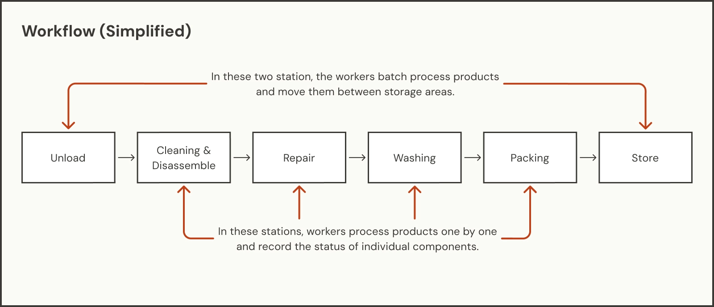
We conducted field simulations using different devices to evaluate how various RFID scanners performed in different environments, measuring factors such as maximum scanning range, the number of items that could be detected at once, and the time required to scan all products. These findings informed the design of the final workflow.
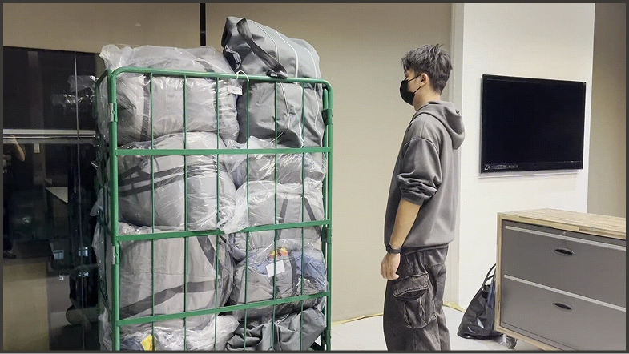

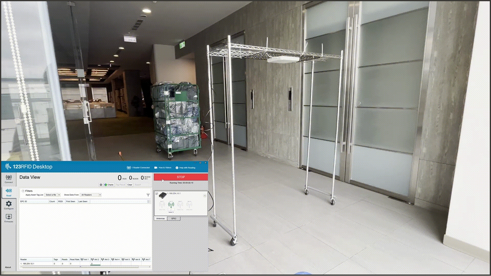
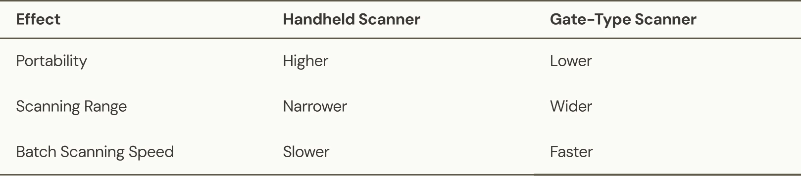
Through interviews, we found that returned products may have missing or extra components without records. When records are digitized, these situations can create gaps in the tracking history. However, the service provider’s main goal is to accurately record rental and return times and respond to customers to support accurate billing, rather than maintaining a perfectly complete tracking history.
Based on these findings, I designed several key solutions. The following sections highlight some of the most impactful ones.
As an RFID scanning solution does not guarantee 100% coverage, other scanning or entering methods are still accessible when RFID scanning fails or when only one or two product components need to be scanned or added.
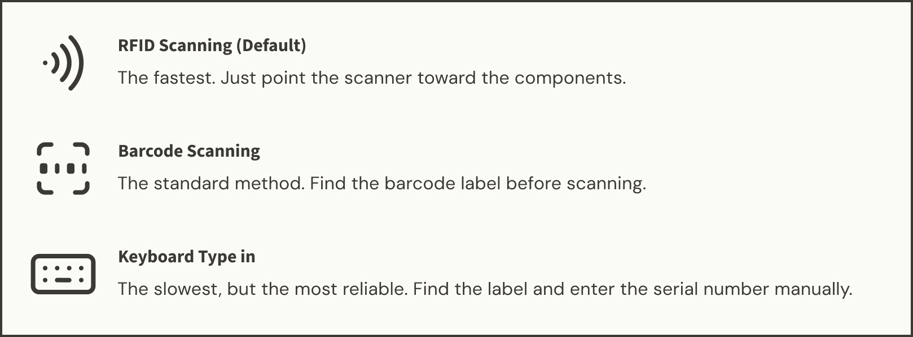
I identified the minimum data required for rental time tracking and automated the rest. For most error cases, the system fills in non-critical data automatically, allowing rental tracking to continue without interrupting the workflow.
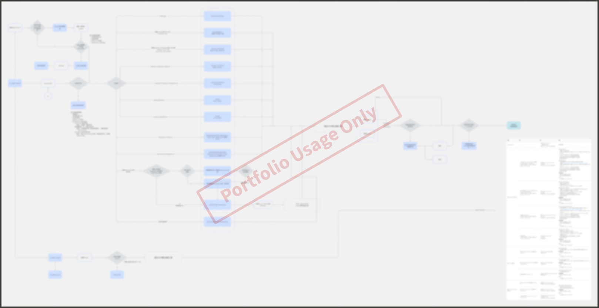
To enable service providers to periodically evaluate operational efficiency and customer needs, I designed several reports divided into two levels of granularity, helping supervisors quickly identify operational issues.
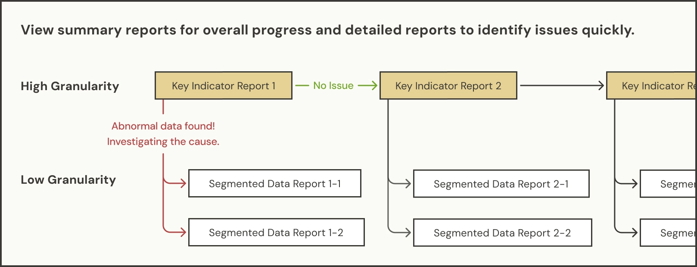
To validate the concept, we demonstrated different scanning methods and results using a simulated work environment. Through the proposal presentation, we outlined the software development roadmap and implementation plan. The client later confirmed the purchase agreement and implemented the solution in 2026.
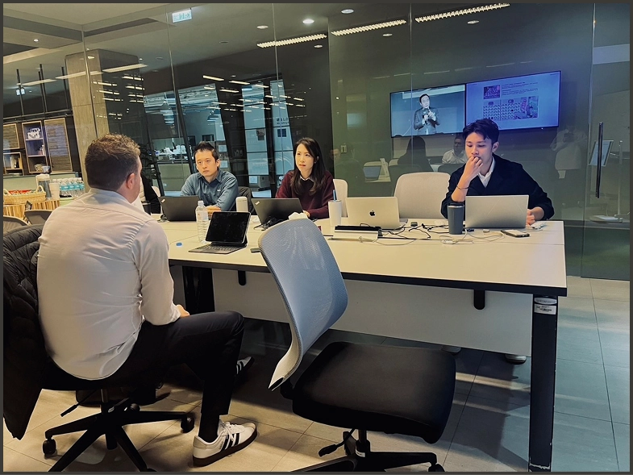
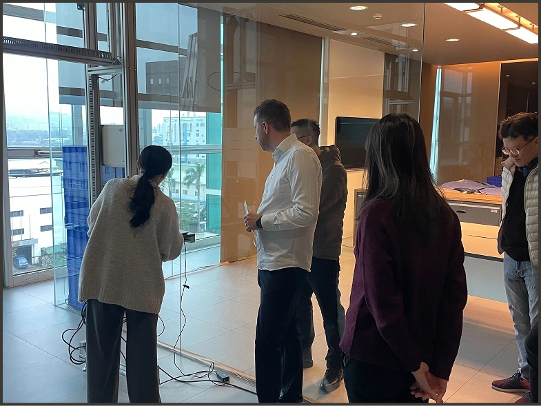
Our research revealed that both service providers and hospitals often bypass certain steps we initially considered important, such as rechecking product serial numbers or inspecting product conditions on-site, simply to keep everything faster. This showed that the interface we originally designed to reduce errors and improve data accuracy, based on general usability principles, ended up being unnecessarily complex.
In the original system design, modifying any module could cause the entire workflow to fail due to the tightly coupled data between modules. As a result, we had to put significant effort into restructuring the system to meet the service provider’s needs by making each module independently modifiable.
From this experience, we should design with modular integration in mind when serving users with diverse workflows, enabling quick adaptation to different operational processes without costly redesigns.